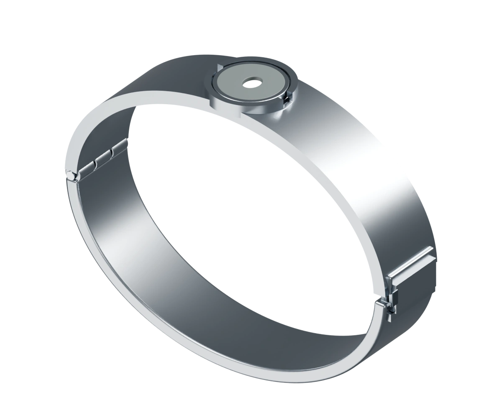
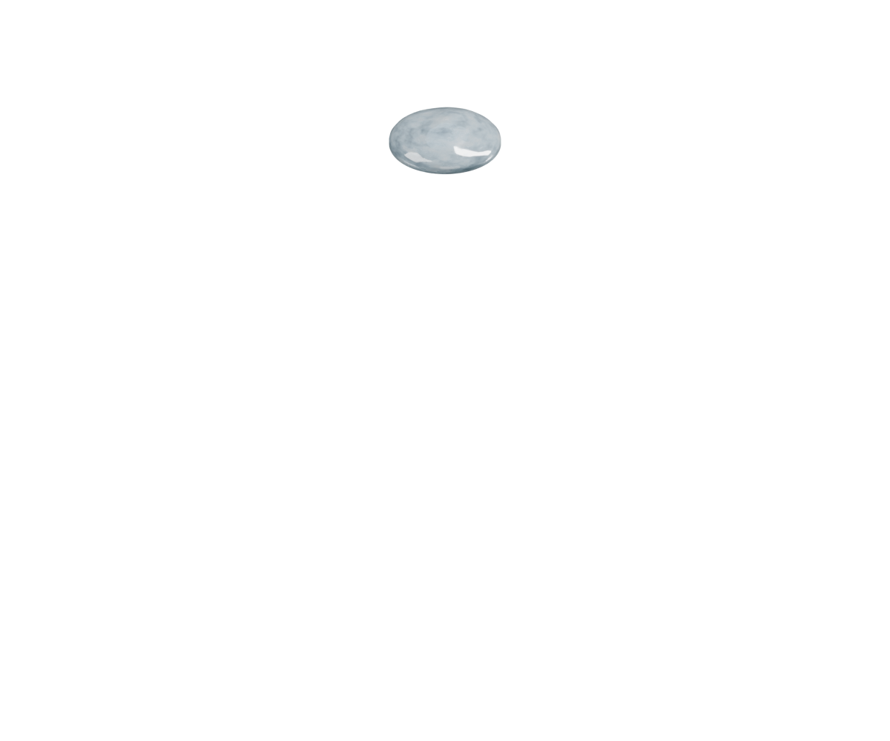
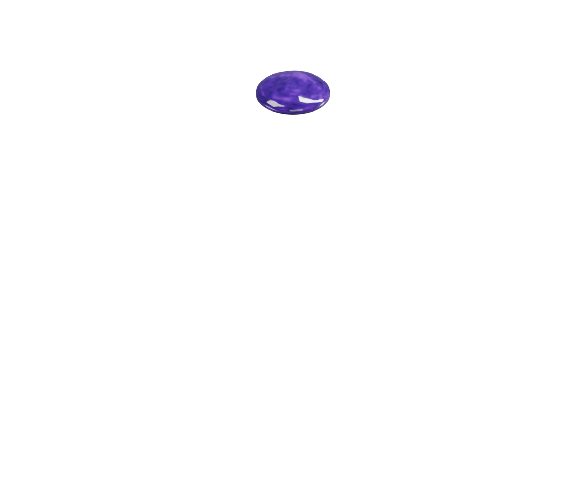
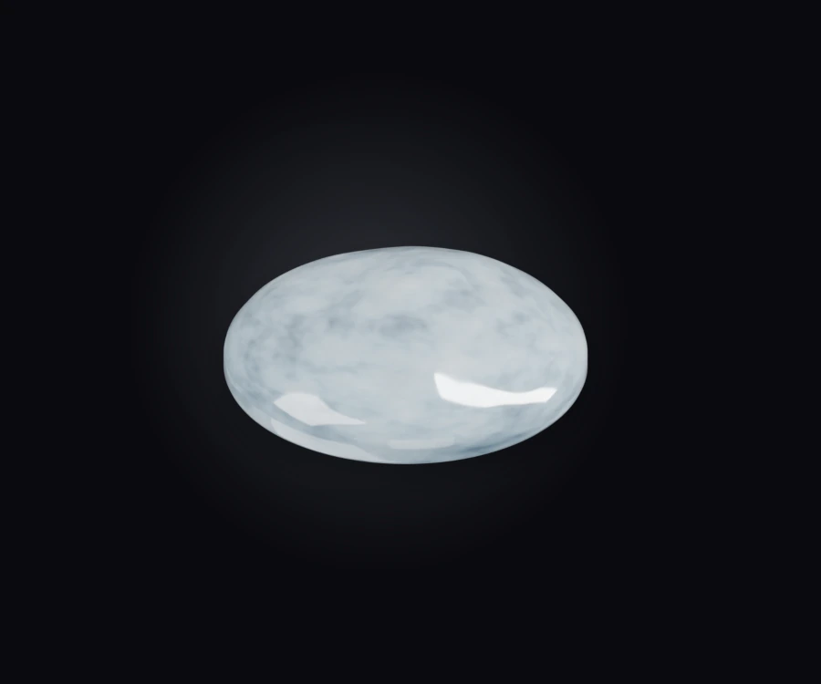
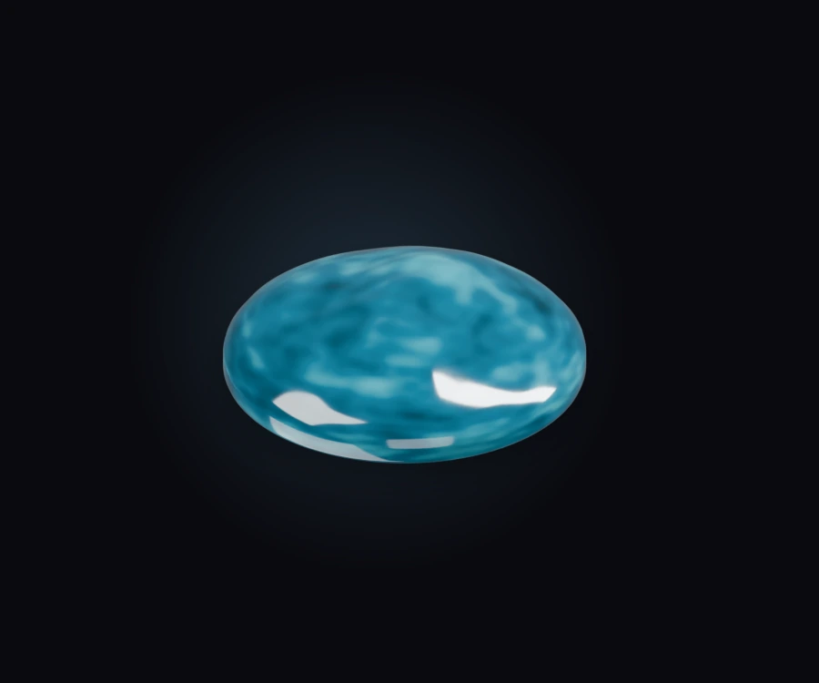

A support system.
For your progress.
A little support for your sober journey.
A place for every day you choose yourself.
A collection of beginnings
Every day counts.
Some you can hold.
Twelve monthly milestones. One shared collection.
In Halo, today’s progress has a place. On your wrist, a future expression.
Your progress. In a different light.
Scroll to explore01 / Arrival
Clear quartz
You made room for a beginning.



Material preview

Month 01
Clear quartz
Design study
Digital material study
One mineral identity across digital milestones and the wearable concept.
Naturally individual
Different days.
Different depths.
Violet amethyst. Golden citrine. A flash of labradorite.
A palette drawn from the world beneath our feet.
Halo, with you
A little closer.
Every day.
A place for your progress. A companion for your days.
And a way to notice what’s changing.
One day at a time.
Give your beginning a place to grow.

A familiar presence.
A small moment to check in with yourself.
Material preview

Month 05
Aquamarine
Mark
Time, in a new light.
One stone for every completed month. A collection that holds your first year.
App screens show illustrative demo data. Mineral images are design studies; natural stones vary.
Make it meaningful